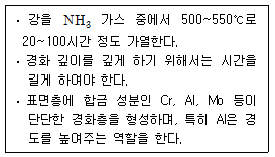
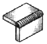
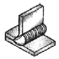
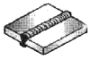
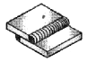
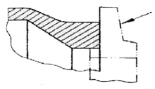
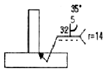
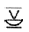
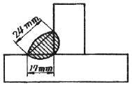

용접산업기사 (2010-07-25 기출문제)
1과목: 용접야금 및 용접설비제도
1. 다음 보기를 공통적으로 설명하고 있는 표면경화법은?

- 질화법
- 침탄법
- 크로마이징
- 화염경화법
(정답률: 79%)

2. 결정입자의 크기와 형상에 대한 설명 중 맞는 것은?
- 냉각속도가 빠르면 결정핵 수는 많아진다.
- 냉각속도가 빠르면 입자는 조대화 된다.
- 냉각속도가 느리면 결정핵 수는 많아진다.
- 냉각속도가 느리면 입자는 미세해 진다.
(정답률: 48%)
3. 강의 용접 열영향부 조직 중 가열온도 범위가 900~1100℃이고 재결정으로 인해 미세화, 인성 등 기계적 성질이 양호한 것은?
- 조립역
- 세립역
- 모재원질역
- 취화역
(정답률: 63%)
4. 피복 아크 용접봉에 습기가 많을 때 나타나는 것은?
- 아크가 안정해 진다.
- 용접부에 기공이나 균열이 생기기 쉽다.
- 용접 비드 폭이 넓어지고 비드가 깨끗해진다.
- 용접 후 각 변형이 작아진다.
(정답률: 96%)
5. 다음 중 강자성체에 속하는 것은?
- Fe, Co, Ni
- Fe, Ag, Zn
- Fe, Sb, Ni
- Fe, Co, Cu
(정답률: 80%)
6. 탄소강의 물리적 성질 변화에서 탄소량의 증가에 따라 증가 되는 것은?
- 비중
- 열팽창계수
- 열전도도
- 전기저항
(정답률: 36%)
7. 철을 서냉하면 910℃에서 단위격자의 특성이 다르게 된다. 이를 무엇이라고 하는가?
- 금속간 화합
- 치환
- 변태
- 공간격자
(정답률: 82%)
8. 금속재료에 포함된 원소 중 용접부의 균열에 가장 큰 영향을 미치는 원소는?
- 크롬(Cr)
- 규소(Si)
- 황(S)
- 니켈(Ni)
(정답률: 78%)
9. 용접부의 노내 응력 제거 방법 중 가열부를 노에 넣을 때 및 꺼낼 때의 노내 온도는 몇 ℃ 이하로 하는가?
- 300℃
- 400℃
- 500℃
- 600℃
(정답률: 83%)
10. 피복 배합제의 성분 중 슬래그 생성제의 역할에 대한 설명으로 틀린 것은?
- 기공이나 내부 결함을 방지한다.
- 용융점이 높은 무거운 슬래그를 만든다.
- 용접부의 표면을 덮어 산화와 질화를 방지한다.
- 용착금속의 냉각속도를 느리게 한다.
(정답률: 79%)
11. 다음 그림 중 모서리 이음을 나타낸 것은?




(정답률: 94%)
12. 스케치 방법 중 평면으로 복잡한 윤곽을 갖고 있는 부품의 경우 그 면에 광명단 등을 바르고 스케치용지에 찍어 그 면의 실형을 얻는 것은?
- 프리핸드법
- 본뜨기법
- 프린트법
- 사진촬영법
(정답률: 80%)
13. KS의 부문별 분류기호에서 V는 어느 부문을 뜻하는 것인가?
- 금속
- 기계
- 조선
- 광산
(정답률: 69%)
14. 표제란의 척도란에 척도 값을 「1 : 2」, 「1 : 5」 등과 같이 기입하는 척도의 종류로 맞는 것은?
- 현척
- 배척
- 실척
- 축척
(정답률: 73%)
15. 아래 그림의 화살표 쪽의 인접부분을 참고로 표시 하는데 사용하는 선의 명칭은?

- 외형선
- 숨은선
- 파단선
- 가상선
(정답률: 69%)
16. 기계재료의 표시기호 SM 25C에서 25C가 뜻하는 것은?
- 재료의 최저 인장강도
- 재료의 용도표시
- 재료의 탄소함유량
- 재료의 제조방법
(정답률: 62%)
17. 보기의 용접기호 설명 중 가장 적절하지 않은 것은?

- 루트 반지름 14[mm]
- 루트 간격 5[mm]
- 홈(그루브)각도 35°
- 루트 깊이 32[mm]
(정답률: 68%)
18. 외형도에 있어서 필요로 하는 요소의 일부분만을 오려서 국부적으로 단면도를 표시한 도면을 무슨 단면도라고 하는가?
- 한쪽단면도
- 온단면도
- 부분단면도
- 회전도시 단면도
(정답률: 85%)
19. CAD의 특징에 대한 설명으로 틀린 것은?
- 점, 선 및 원 등을 이용하여 도형을 정확하게 그릴수 있다.
- 필요에 따라 도면을 확대, 축소, 이동 등이 가능하다.
- 도형을 2차원적으로만 그리고 입체적으로 그릴 수없다.
- 방대한 자료를 컴퓨터에 저장하여 데이터베이스를구축하여 설계의 생산성을 향상 시킬 수 있다.
(정답률: 91%)
20. KS에 의한 용접 보조기호

의 명칭을 올바르게 설명한 것은?- 평면 마감 처리한 V형 맞대기 용접
- 이면 용접이 있으며 표면 모두 평면 마감 처리한 볼록 양면 V형 용접
- 이면 용접이 있으며 표면 모두 평면 마감 처리한 오목 필릿 용접
- 이면 용접이 있으며 표면 모두 평면 마감 처리한 V형 맞대기 용접
(정답률: 81%)
2과목: 용접구조설계
21. 용접이음 설계 시 충격하중을 받는 연강의 안전율로 적당한 것은?
- 3
- 5
- 8
- 12
(정답률: 51%)
22. 용접이 완료된 후에 발생되는 응력부식의 원인으로 맞는 것은?
- 과다한 탄소함량
- 담금질 효과
- 뜨임효과
- 잔류응력의 증가
(정답률: 72%)
23. 두께가 6.4mm인 두 모재의 맞대기 이음에서 용접이 음부가 4536kgf의 인장하중이 작용할 경우 필요한 용접부의 최소 허용길이(mm)는 약 얼마인가? (단, 용접부의 허용인장응력은 14.06kgf/mm2 이다.)
- 50.4mm
- 40.3mm
- 30.1mm
- 20.7mm
(정답률: 54%)
24. 금속의 응고 과정에서 방출된 기체가 빠져 나가지 못하여 생긴 결함을 무엇이라고 하는가?
- 슬래그
- 설퍼 프린트
- 홀인
- 기공
(정답률: 92%)
25. 용접선에 따라 응력을 제거할 목적으로서 압축응력 부분을 가스불꽃으로 가열한 직후에 수냉하여 그 부위 소성 변형시켜 잔류응력을 감소시키는 것은?
- 억제법
- 역 변형법
- 도열법
- 저온응력 완화법
(정답률: 69%)
26. 용접구조물을 제작할 때 피로강도를 향상시키기 위한 방법을 올바르게 설명한 것은?
- 가능한 응력 집중부에는 용접부가 집중되도록 한다.
- 열처리 또는 기계적인 방법으로 용접부 잔류응력을 완화시킬 것
- 냉간가공 또는 야금적 변태를 이용하여 기계적 강도를 완화시킬 것
- 표면가공, 다듬질 등에 의하여 단면이 급변하게 할것
(정답률: 78%)
27. 용접지그 사용 시 장접에 대한 설명으로 틀린 것은?
- 용접작업을 용이하게 한다.
- 제품의 정도를 균일하게 향상시킨다.
- 작업능률이 향상되므로 변형이 생긴다.
- 공정수를 절약하므로 작업능률이 좋다.
(정답률: 93%)
28. 용접부에 발생하는 잔류응력 완화법이 아닌 것은?
- 응력제거어닐링법
- 피닝법
- 고온응력완화법
- 기계적응력완화법
(정답률: 63%)
29. 용접비용을 줄이기 위한 방법으로 고려해야 할 사항 중 틀린 것은?
- 대기시간을 길게 한다.
- 용접이음부가 적은 경제적인 설계를 한다.
- 재료의 효과적인 사용계획을 세운다.
- 용접지그를 활용한다.
(정답률: 94%)
30. 용접이 교차하는 곳에는 응력집중이 생기기 쉬워 부채꼴 오목부를 붙인다. 이것을 무엇이라 하는가?
- 빌드업
- 스켈롭
- 블록
- 캐스케이드
(정답률: 75%)
31. I형 맞대기 이음 용접에서 용착금속의 최대 인장응력이 100kgf/mm2 이고 안전율이 5이라면 이음의 허용응력은 몇 kgf/mm2인가?
- 10 kgf/mm2
- 20 kgf/mm2
- 40 kgf/mm2
- 500 kgf/mm2
(정답률: 79%)
32. 용접순서를 결정할 때의 주의사항으로서 틀린 것은?
- 수축은 자유단으로 보낸다.
- 대칭으로 용접한다.
- 수축이 큰 이음은 먼저 용접한다.
- 리벳과 용접을 병용할 때 리벳을 먼저 한다.
(정답률: 70%)
33. 자분 탐상 검사의 자화방법이 아닌 것은?
- 축통전법
- 관통법
- 극간법
- 원형법
(정답률: 59%)
34. 용접 길이를 짧게 나누어 간격을 두면서 용접하는 방법으로 피 용접물 전체에 변형이나 잔류응력이 적게 발생하도록 하는 용착법은?
- 전진법
- 후진법
- 블로법
- 비석법
(정답률: 84%)
35. 본 용접하기 전에 적당한 예열을 함으로서 얻어지는 효과가 아닌 것은?
- 예열을 하게 되면 기계적 성질이 향상된다.
- 용접부의 냉각속도를 느리게 하여 균열 발생이 적게 된다.
- 용접부 변형과 잔류 응력을 경감시킨다.
- 용접부의 냉각속도가 빨라지고 높은 온도에서 큰 영향을 받는다.
(정답률: 89%)
36. 다음 그림과 같은 필릿 용접에서 이론 목두께는?

- 약 8.5 mm
- 약 17 mm
- 약 24 mm
- 약 12 mm
(정답률: 43%)
37. 피복 아크 용접에서 언더컷의 발생 원인이 아닌 것은?
- 용접 속도가 부적당할 때
- 용접전류가 너무 높을 때
- 부적당한 용접봉을 사용할 때
- 용착부가 급냉 될 때
(정답률: 79%)
38. 용접의 장점에 대한 설명으로 틀린 것은?
- 이음효율이 높다.
- 수밀, 기밀, 유밀성이 우수하다.
- 저온취성이 생길 우려가 없다.
- 재료의 두께에 제한이 없다.
(정답률: 89%)
39. 피닝에 대한 설명으로 맞는 것은?
- 특수해머로 용착부를 1번 정도 때려 용착부의 균열을 점검한다.
- 특수해머로 용착부를 1번 정도 때려 용착부의 굽힘응력을 완화시킨다.
- 특수해머로 용착부를 연속으로 때려 용착부의 기공을 점검한다.
- 특수해머로 용착부를 연속으로 때려 용착부의 인장응력를 완화시킨다.
(정답률: 89%)
40. 필릿 용접이음부의 보수에 관한 설명으로 옳지 않은 것은?
- 간격이 1.5mm 이하인 경우 그대로 규정된 다리길이로 용접한다.
- 간격이 1.5~4.5mm의 경우에는 6mm 정도의 뒷댐판을 대고 용접한다.
- 간격이 4.5mm이상인 경우 라이너를 넣고 용접한다.
- 간격이 4.5mm이상인 경우 부족한 판을 300mm이상 잘라내어 교환한 후 용접한다.
(정답률: 42%)
3과목: 용접일반 및 안전관리
41. 맞대기 저항용접에 해당하는 것은?
- 스폿용접
- 매시 심 용접
- 프로젝션 용접
- 업셋용접
(정답률: 44%)
42. 용접을 장시간 하게 되면 용접 흄 또는 가스를 흡입하게 되는데 그 방지대책 및 주의사항으로 가장 적당하지 않은 것은?
- 아연 합금, 납 등의 모재에 대해서는 특히 주의를 요한다.
- 환기 통풍을 잘한다.
- 절연형 홀더를 사용한다.
- 보호 마스크를 착용한다.
(정답률: 87%)
43. 교류아크 용접에서 전원전류는 몇 사이클 마다 극성이 변하는가?
- 1/2
- 1/3
- 1/4
- 1/5
(정답률: 63%)
44. 피복 금속 아크 용접봉의 피복 배합제의 주요 성분이 아닌 것은?
- 고착성분
- 슬래그생성 성분
- 아크안정 성분
- 전기도체 성분
(정답률: 74%)
45. 다음 중에서 용접기의 수하특성과 가장 관련이 같은 것은?
- 저항 - 열의 특성
- 전류 - 전력의 특성
- 전압 - 전류의 특성
- 전력 - 저항의 특성
(정답률: 73%)
46. 가스절단에서 예열불꽃이 약할 때 일어나는 현상으로 가장 거리가 먼 것은?
- 절단 속도가 늦어진다.
- 드래그가 증가한다.
- 절단이 중단되기 쉽다.
- 절단면의 위 기슭이 녹아 둥글게 된다.
(정답률: 71%)
47. 카바이드 취급 시 주의사항으로 틀린 것은?
- 운반 시 타격, 충격, 마찰 등을 주지 말 것
- 카바이드 동에서 카바이드를 꺼낼 때에는 모넬메탈이나 목재공구를 사용할 것
- 카바이드는 개봉 후 잘 닫아 안전상 습기가 침투하도록 보관할 것
- 저장소 가까이에 인화성 물질이나 화기를 가까이 하지 말 것
(정답률: 87%)
48. TIG용접에서 아크 스타트를 쉽게 하고, 아크가 안정화되도록 용접기에 설비하는 것은?
- 콘덴서
- 가동철심
- 고주파발생기
- 리액터
(정답률: 73%)
49. 소화 작업에 대한 설명 줄 틀린 것은?
- 화재가 발생하면 화재 경보를 한다.
- 화재 시는 가스밸브를 조이고 전기 스위치를 끈다.
- 전기배선 시설의 수리 시는 전기가 통하는지 여부를 확인한다.
- 유류 및 카바이드에 붙은 불은 물로 끄는 것이 좋다.
(정답률: 91%)
50. 자동용접에 필요한 기구 중 대형파이프를 원주용접할 때 사용하는 기구는?
- 용접 포지셔너
- 턴테이블
- 매니플레이터
- 터닝롤러
(정답률: 74%)
51. 가스용접에 사용되는 가연성 가스의 완전 연소식의 화학식으로 틀린 것은?
- C2H2+2½O2=2CO2+H2O
- H2+½O2=H2O
- C3H8+5O2=3CO2+2H2O2
- CH4+2O2=CO2+2H2O
(정답률: 58%)
52. 교류용접기와 비교한 직류용접기 특징 설명으로 맞는 것은?
- 아크의 안정성이 우수하다.
- 전격의 위험이 많다.
- 용접기의 고장이 적다.
- 용접기의 가격이 저렴하다.
(정답률: 59%)
53. 분말절단법 중 플럭스 절단에 주로 사용되는 재료는?
- 스테인리스 강판
- 알루미늄 탱크
- 저합금 강판
- 강관
(정답률: 59%)
54. 핀치효과에 의해 열에너지의 집중도가 좋고 고온이 얻어지므로 용입이 깊고 비드 폭이 좁은 접합부가 형성되며, 용접속도가 빠른 것이 특징인 용접은?
- 플라스마 아크 용접
- 테르밋 용접
- 전자빔 용접
- 원자 수소 아크 용접
(정답률: 51%)
55. 서브메지드 아크 용접 시 사용하는 용융형 용제의 특징에 대한 설명으로 틀린 것은?
- 흡습성이 높아 재건조가 필요하다.
- 비드 외관이 아름답다.
- 용제의 화학적 균일성이 양호하다.
- 미용융 용제는 재사용이 가능하다.
(정답률: 64%)
56. 산소 및 아세틸렌용기 취급에 대한 설명 중 올바른 것은?
- 산소병은 60℃이하, 아세틸렌 병은 30℃이하의 온도에서 보관한다.
- 아세틸렌 병은 눕혀서 운반하되 운반도중 충격을 주어서는 안된다.
- 아세틸렌 병은 폭발의 위험을 방지하기 위하여 산소병과 5m 이상 간격을 두고 설치한다.
- 산소병 내에 다른 가스를 혼합해서는 안되며 누설시험시는 비눗물을 사용한다.
(정답률: 78%)
57. 연강용 피복 아크 용접봉 중 가스 실드계의 대표적인 용접봉으로 피복제 중에 유기물을 20~30% 정도 포함하고 있는 것은?
- 라임티타니아계
- 저수소계
- 철분산화철계
- 고셀룰로오스계
(정답률: 62%)
58. 이산화탄소 아크 용접법의 특징을 설명한 것 중 옳은 것은?
- 적용 재질이 비철계통으로 한정되어 있다.
- 용착금속의 기계적 성질이 나쁘다.
- 용입이 깊고 용접속도를 빠르게 할 수 있다.
- 아크를 볼 수 없으므로 시공이 불편하다.
(정답률: 83%)
59. 저항용접에 의한 압접은 전기저항 열로써 모재를 용융상태로 만들고 외력을 가하여 접합하는 용접법이 다. 이때 발생하는 저항열을 구하는 식은? (단, Q : 저항열, I : 전류, R : 전기저항, t : 통전시간(초))
- Q=0.24IR2t
- Q=0.24I2Rt
- Q=0.24I2R2t
- Q=0.24I2Rt2
(정답률: 77%)
60. 용접용어 중 용착부를 만들기 위하여 녹여서 첨가하는 금속을 무엇이라고 하는가?
- 용제
- 용접금속
- 용가재
- 덧살
(정답률: 76%)